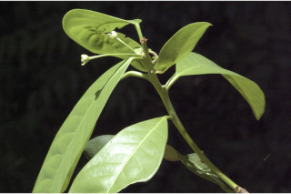
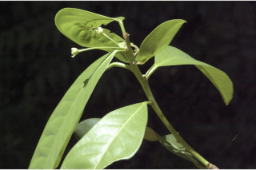

| Habit : | Trees , up to 8 m tall. |
| Leaves : | Leaves simple , alternate , spiral ; stipules in pairs, caducous and leaving scar ; petiole to 2 cm, swollen at both ends; lamina to 15 × 4 cm, variable, elliptic-lanceolate to oblanceolate , apex acute , base attenuate , subcoriaceous ; midrib raised above; secondary_nerves 6-12 pairs; tertiary_nerves broadly reticulate . |
| Inflorescence / Flower : | Flowers unisexual , dioecious ; male flowers in axillary clusters, short pedicellate , petals white, disk yellow; female solitary , axillary , long pedicellate , petals yellowish and small, disk yellow. |
| Fruit and Seed : | Capsule , compressed, globose , 2 × 3.2 cm, woody , long pedicellate ; seeds 2 per cell. |


 
